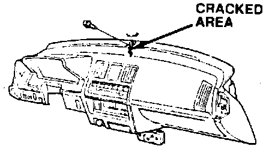
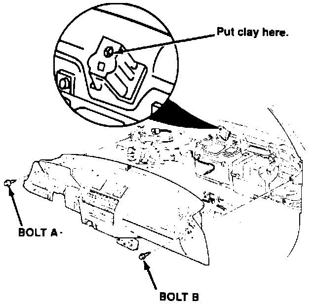

Dashboard - Cracked
July 3, 1989BULLETIN NO. 89-014
YEAR 1986-89
MODEL INTEGRA
VIN APPLICATION ALL
Cracked Dashboard
PROBLEM

The dashboard cracks at the center bolt hole.
PROBABLE CAUSE
The dashboard is not aligned with the center mount, causing it to crack when the car is driven on very rough roads.
CORRECTIVE ACTION
After removing the cracked dashboard, check the clearance between the sheet metal and new dashboard at the center mounting point.
1. Position the heater controls in the HEAT mode. Make sure the defroster door is closed.

2. Place a piece of clay on top of the center mounting bracket.
3. Carefully place the new dashboard in position and tighten bolts A and B.
4. Remove the bolts and the dashboard. Be careful not to compress or disturb the clay during removal.
5. Measure and record the thickness of the clay.
6. Install enough 6 mm washers on the center mounting bracket to equal the thickness of the clay. However, never exceed a total washer thickness of 4 mm. Washers of several thicknesses are listed under PARTS INFORMATION. Hold the washers in position with silicone sealer.
7. Install the new dashboard according to the instructions in the Service Manual.
PARTS INFORMATION
Description Part Number
6mm washers:
1.0 mm thick 94101-05700
1.5 mm thick 90403-679-003
2.0 mm thick 90433-639-000
WARRANTY CLAIM INFORMATION
In warranty:
The normal warranty applies.
Out-of-warranty:
Any repair performed after warranty expiration may be eligible for goodwill consideration by the District Service Manager. You must request consideration, and get the DSM's decision, before starting work.
Operation number: 841105
Flat rate time: 3.6 hours
Failed P/N: 66821-SD2-A01ZC
Defect code: 017
Contention code: A01